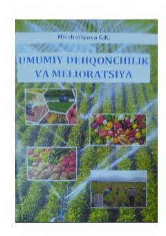

UDDehqonchilik va melioratsiya fanidan amaliy va laboratoriya mashg'ulotlari uchun o'quv qo'llanma.
Ushbu o'quv qo'llanma tuproq strukturasini, agrofizik xossalarini, begona o'tlarga qarshi kurashish usullarini va dala tajribalarini o'tkazish tartiblarini qamrab oladi. Kitob agronomiya yo'nalishidagi talabalar uchun mo'ljallangan bo'lib, amaliy mashg'ulotlar va laboratoriya ishlarini bajarish bo'yicha ko'rsatmalarni o'z ichiga oladi.